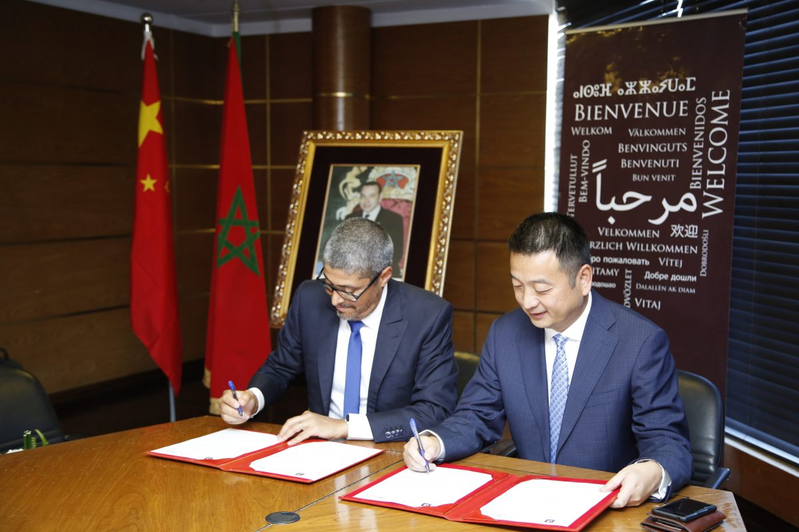

Depuis la visite du roi Mohammed VI en Chine, les deux pays ont établi un partenariat stratégique et beaucoup d’avancées sur le plan économique. Cette visite a été couronnée par l’exemption de visa en faveur des citoyens chinois. Résultat : le nombre de touristes chinois a augmenté de 14 % entre 2016 et 2019.

« Les relations de coopération entre les deux pays ont déjà connu un développement important et nous avons un avenir prometteur », affirme Li Li, ambassadeur de Chine au Maroc lors d’une conférence de presse organisée à Rabat. « Il faut consolider les échanges culturels avec le tourisme en inculquant une culture chez les Chinois et les Marocains », a-t-il ajouté.
Les touristes chinois sont nombreux à visiter le Maroc. Selon les dernières statistiques, près de 350.000 Chinois ont posé leur valise dans le royaume. Ce qui constitue une hausse de 550% par rapport à 2016.
Finalement, avec pas moins de 119% de croissance, le fabricant chinois a réussi à vendre en 2018 au Maroc, plus du double des smartphones commercialisés en 2017.
Pour y parvenir, l’Office National Marocain du Tourisme (ONMT) a scellé en 2019 un partenariat sur trois ans de co-marketing avec la première agence de tourisme chinoise en ligne C Trip : le jackpot en quelque sorte qui couronne des mois de pourparlers et de travail. Et surtout qui transforme l’essai, puisque les deux parties avaient déjà mené un partenariat d’une année, comme l’explique Adel El Fakir, le Directeur Général de l’Office, pour mieux se connaître ! Et autant dire que le courant passe bien entre les deux parties à travers ce nouvel accord de trois ans. Qui ne serait pas d’ailleurs séduit par la diversité de l’offre de la destination Maroc ?
En effet, le Président et cofondateur de C Trip, James Jianzhang Liang, s’est déplacé en personne pour cette occasion au Maroc et il a été reçu ce vendredi 6 septembre 2019 par le chef de gouvernement ensuite par le ministre du Tourisme avant d’arriver au siège de l’ONMT pour procéder à la signature dudit partenariat, en présence de journalistes des deux pays.
« L’objectif, à terme, étant d’accueillir quelques 500.000 touristes chinois par an. Le mémorandum signé aujourd’hui avec ce grand tour opérateur sera d’une durée de 3 ans et portera sur un partenariat Co-marketing qui assurera une visibilité maximale de la destination Maroc à travers le réseau de C TRIP”, explique Adel El Fakir, qui ne donnera pas plus de détails sur les termes du contrat.
Une belle consécration pour le manager marocain : Faut-il rappeler que cette signature conforte un objectif parmi les deux que s’était fixé le Directeur général de l’ONMT pour cette année 2019 : Le digital et le marché chinois.
Il s’agit en effet, du plus gros prescripteur chinois et parmi les plus importants dans le monde qui travaillera de concert avec l’ONMT pour renforcer le flux des touristes chinois sur la destination Maroc. Un flux qui est passé de 10.000 touristes chinois en 2015 à quelque 132.000 touristes chinois en 2018.
L’objectif de multiplier presque par quatre ce chiffre semble très réalisable puisque non seulement l’empire du milieu compte 150 millions de touristes mais également parce que C Trip qui pèse pour 4 milliards de dollars de chiffre d’affaires compte 300 millions de clients actifs (coté en bourse au Nasdaq depuis 2003, l’opérateur compte 30.000 employés).
« L’ONMT est déjà présent sur le marché chinois à travers son bureau de représentation ouvert depuis huit ans à Pékin. Mais aujourd’hui, on assiste à l’ouverture d’une nouvelle page sur ce marché en forte croissance, encouragé par la levée de visa décidée par SM le Roi Mohammed VI. Le potentiel sur ce marché est énorme et les professionnels en ont conscience depuis longtemps. Beaucoup de choses ont été réalisées pour attirer les touristes chinois mais aujourd’hui, nous passons à une dimension industrielle. Il faut qu’on saisisse ensemble cette nouvelle opportunité qui s’offre à nous», explique pour sa part Hamid Bentahar, Président du CRT de Marrakech et qui représentait le président de la CNT.
Les opérateurs touristiques comprennent bien tout le potentiel de cette clientèle puisque les statistiques attestent que 82% des visiteurs chinois au Maroc ont opté pour des 4 et 5 étoiles, montrant ainsi leur préférence pour des prestations et des expériences de qualité.
Dans ce sens, fondée en 1999, C Trip a construit un vaste réseau d’établissements pour offrir à ses clients un large choix d’hébergements auxquels vont s’ajouter les adresses marocaines. C Trip fournit également des offres de billets d’avion, de visas, de logements, de vacances, de croisières ou de voyages d’affaires. Son réseau compte plus de 1,2 million d’hôtels dans 200 pays et régions, et son réseau de vols, compte plus de 2 millions d’itinéraires aériens reliant plus de 5.000 villes à travers le monde.
En évoquant l’aérien et bien que le DG de l’ONMT estime que la question de la liaison directe entre le Maroc et la Chine doit être posée à la partie concernée, il n’en demeure pas moins que dans les milieux de tourisme on avance la date de janvier 2020 comme délai de mise en place de cette ligne. Date qui n’a été confirmée par aucune partie officielle, mais la mise en place d’une ligne directe le plus rapidement possible ne manquera pas de contribuer à la réalisation de l’objectif de ce partenariat entre l’ONMT et C Trip
La Royal Air Maroc (RAM) a confirmé la mise en place d’une liaison directe entre l’aéroport Mohammed V de Casablanca et l’aéroport international de Pékin-Daxing à partir du 16 janvier prochain. À bord du dernier B787-9 Dreamliner acquis par la compagnie publique, le vol devrait durer treize heures et transportera plus de 325 passagers à une fréquence de trois liaisons par semaine.
« Royal Air Maroc est fière d’offrir à ses passagers des possibilités de vols directs entre le Maroc et la Chine. Tant attendue, cette nouvelle route aérienne contribuera, à coup sûr, au développement de la destination Maroc auprès du premier marché émetteur mondial de touristes. Elle nous permettra de répondre à un besoin fort exprimé par les opérateurs économiques des deux pays et participera à renforcer davantage les relations commerciales et économiques entre le Maroc et la Chine », explique Abdelhamid Addou, le président-directeur général de la compagnie.
Ctrip: Trip.com Group (anciennement Ctrip.com International) est un fournisseur de services de voyages regroupant les agences de voyages en ligne Trip.com, Skyscanner, Qunar et Ctrip.com Lire plus.
OMNT: L'Office national marocain du tourisme, créé en 1918, est un établissement public marocain, à caractère administratif doté de la personnalité civile et de l'autonomie financière. L'ONMT est un des acteurs principaux du secteur du tourisme marocain.
Lire plus.Royal Air Maroc est une compagnie aérienne marocaine fondée le 29 juin 1957. Sa plate-forme de correspondance principale est située sur l'aéroport Mohammed-V de Casablanca. Elle dessert de nombreux aéroports en Afrique, en Europe, en Amérique et en Asie.
Lire plus.En vous inscrivant à cette newsletter, vous recevrez quotidiennement des informations et des actualités sur le Maroc et la Chine. vous ne regretterez jamais cette expérience.
envoyez-nous un message et abonnez-vous à notre newsletter!
© 2021 MarocChine project